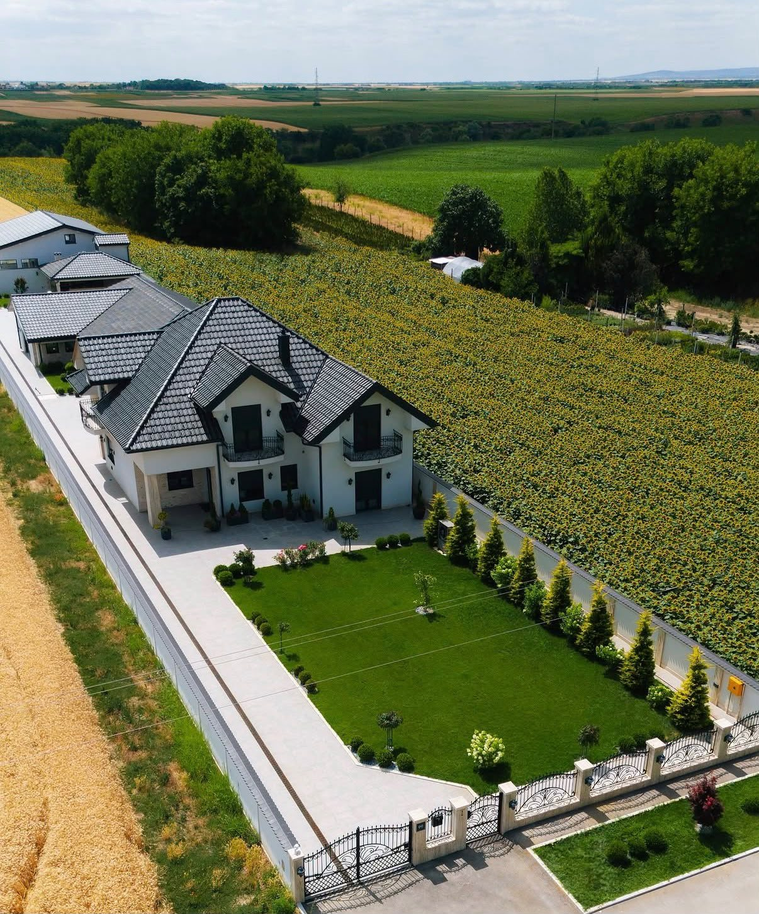
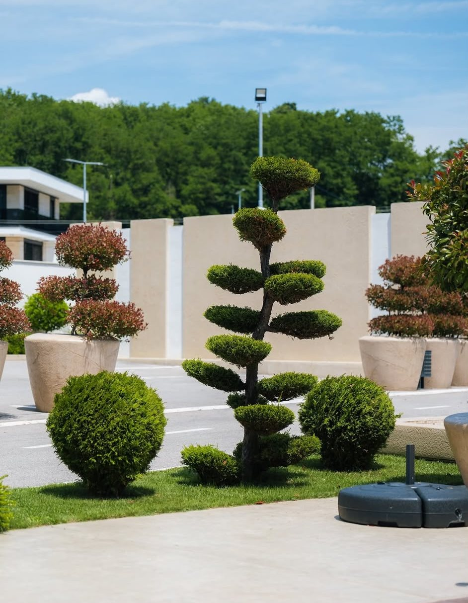
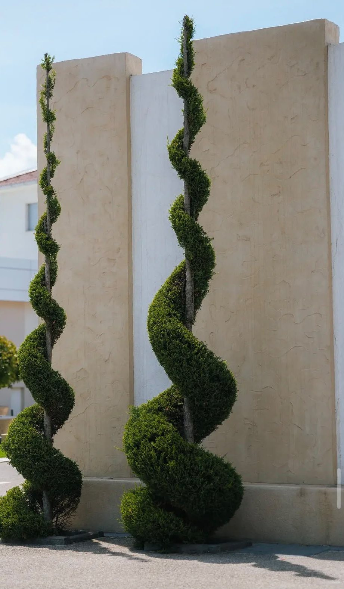
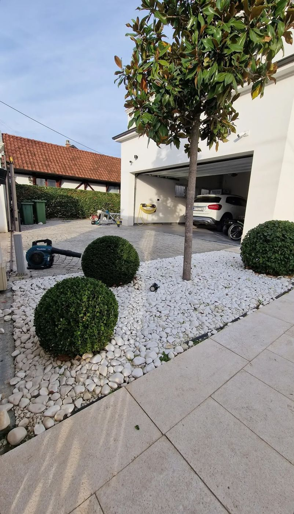
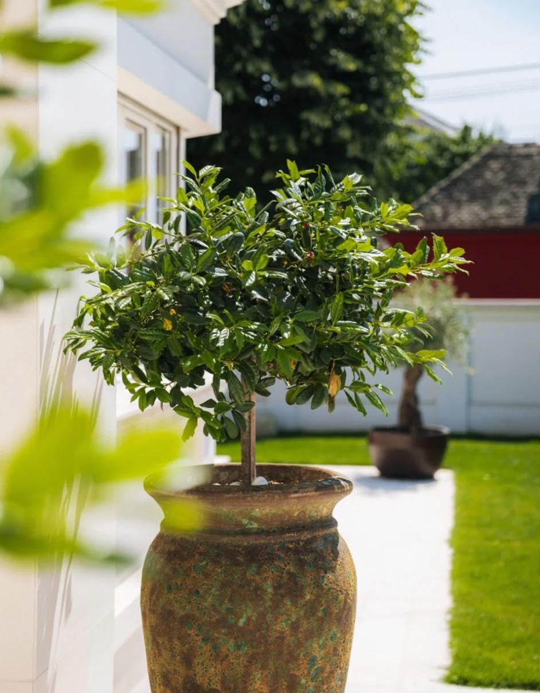
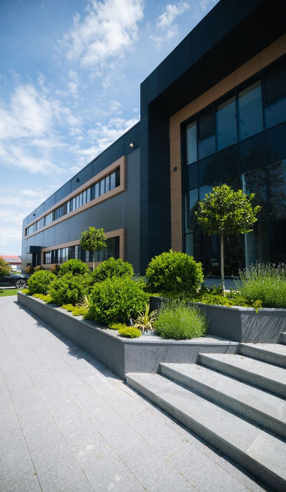

Projektujem i uređujem vrtove i zelene površine za kuće, vile, vikendice i poslovne objekte - od prve ideje, preko 3D vizualizacije, do zasađene poslednje biljke.
Ujutru pogledaš kroz prozor u parče zemlje koje ništa ne govori. Trava neravnomerno raste, ćošak pun korova, terasa gleda u prazan zid.
Kupio si nekoliko biljaka iz rasadnika i posadio ih onako kako si mislio da izgleda lepo. Do proleća je pola njih uvenulo, jer im to mesto i to sunce nisu odgovarali.
Prolaze meseci, pa godine, a dvorište ostaje isto. Prostor koji bi mogao da koristiš za ručak napolju, decu ili opuštanje uveče stoji neiskorišćen.

Umesto da sam biraš biljke i nadaš se da će uspeti, radim s tobom od prve ideje do gotovog vrta. Analiziram prostor, tlo, sunce i tvoje potrebe, pa pravim dizajn koji ima smisla za tvoju kuću, tvoju klimu i tvoj način života.
Dobijaš 3D vizualizaciju pre nego što se zasadi i jedna biljka, tako da tačno znaš kako će vrt izgledati kad je gotov, ne tek kad radovi budu završeni.
Radim u oblasti pejzažne arhitekture i hortikulture i dizajnirala sam vrtove za privatne kuće, vile, vikendice i poslovne objekte različitih veličina i namena.
Svaki predlog biljaka i materijala biram prema tlu, klimi i osvetljenju konkretnog prostora, ne po trenutnom trendu, tako da vrt izgleda dobro i za pet godina, ne samo prvog proleća.

Dizajn vrta nije samo lepši izgled dvorišta. To je promena u tome kako svaki dan koristiš i doživljavaš svoj prostor.
Prostor za ručak, kafu i opuštanje, ne samo prizor kroz prozor koji ostaje neiskorišćen.
Izabrane za tvoje tlo, tvoje sunce i tvoju klimu, ne nasumično iz rasadnika.
Raspored je osmišljen da bude praktičan, tako da vrt ne postane još jedan posao.
Kroz 3D vizualizaciju vidiš kako će vrt izgledati, bez nagađanja i iznenađenja.
Uređen vrt podiže vrednost imanja, ne samo njegov izgled na prvi pogled.
Kad gledaš kroz prozor, vidiš dovršen prostor, ne obavezu koju stalno odlažeš.
Deo projekata koje sam dizajnirala i sprovela, od prve skice do zasađenog vrta u kom klijenti danas provode vreme. Prevuci klizač preko slike i vidi isto dvorište pre i posle uređenja.

Prednje dvorište porodične kuće - novi raspored biljaka i staza.

Bašta uz terasu - zona za sedenje uklopljena u zelenilo.

Ulazna zona poslovnog objekta - jasan raspored i niže održavanje.
Ljudi koji su svoje dvorište, terasu ili ulaz u objekat prepustili meni, i danas ih koriste svaki dan.
„Dvorište nam je godinama stajalo prazno. Dobili smo 3D prikaz pre početka i na kraju je izgledalo tačno tako. Sad tu ručamo svaki vikend."
„Sve biljke su birane prema našem tlu i suncu. Prošla je druga sezona i nijedna se nije osušila, a održavanje je zaista minimalno."
„Uredila nam je ulaz u poslovni prostor. Klijenti prvo primete zelenilo, a mi nemamo obavezu oko njega. Sve po dogovoru i u roku."
„Terasa vikendice bila je gola betonska ploča. Danas je to najlepši deo kuće, sa senkom i zelenilom oko stola. Preporuka od srca."
Cena zavisi od veličine prostora, složenosti dizajna i obima radova, zato nakon prve konsultacije pravim ponudu prilagođenu tačno tvom projektu, ne paušalni paket koji ne odgovara tvom dvorištu.
Gledam prostor, tlo i osvetljenje, pričamo o tome kako želiš da koristiš svoje dvorište.
Dobijaš predlog rasporeda, biljaka i materijala, sa 3D prikazom pre nego što radovi počnu.
Dobijaš tačnu cenu i redosled radova prilagođen tvom budžetu i vremenu.
Vodim radove od pripreme zemljišta do sadnje poslednje biljke.
Dobijaš jasan raspored zalivanja i održavanja, tako da vrt ostane onakav kakav je zamišljen.
Svaki dizajn pravim prema tlu, klimi i osvetljenju tvog konkretnog prostora, ne po šablonu. Biljke koje predlažem imaju realne uslove da uspevaju, a raspored je osmišljen da održavanje ne postane novi posao.
Ako se u fazi konsultacija ispostavi da neki deo koncepta ne odgovara tvom prostoru ili navikama, prilagođavam ga pre nego što radovi krenu.
Dvorište će izgledati skoro isto kao danas. Ista trava, ista praznina pored terase, ista neodlučnost svaki put kad pomisliš da nešto posadiš.
Cena čekanja nije novac, već sezone koje prolaze bez vrta u kom bi mogao da sediš uveče. Sadnja ima svoje termine, pa svaki propušten mesec pomera gotov vrt za celu sezonu.
Popuni formu i ukratko opiši svoj prostor i šta ti smeta u njemu danas. Javljam se za dogovor konsultacija, a nakon obilaska prostora šaljem predlog koncepta i okvirnu ponudu prilagođenu tvom projektu.